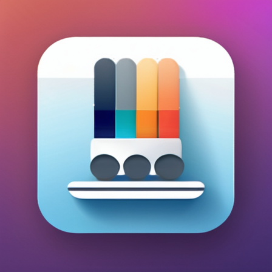
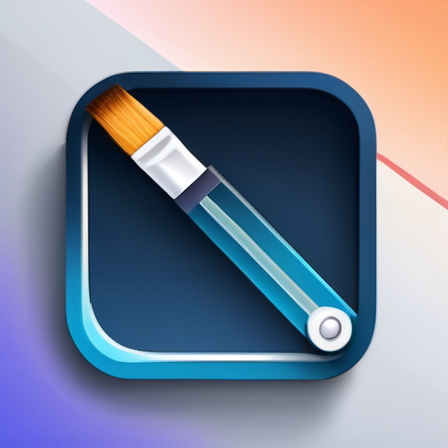

Tiếp thị số
TDN-M cung cấp dịch vụ Digital Marketing hàng đầu để tăng cường sự hiện diện trực tuyến và thu hút lưu lượng truy cập đến trang web của bạn.
Tối ưu hóa SEO
Các chuyên gia và công cụ SEO của TDN-M sẽ hỗ trợ bạn cải thiện thứ hạng công cụ tìm kiếm, giúp khách hàng tiềm năng dễ dàng tìm thấy bạn.
Quản lý mạng xã hội
Gắn kết với khách hàng của bạn thông qua các chiến lược mạng xã hội hiệu quả, phù hợp với nhu cầu thương hiệu của bạn.
Truyền thông
TDN-M cung cấp các giải pháp truyền thông để quảng bá sản phẩm và thương hiệu của bạn trên nhiều nền tảng truyền thông.
Sản xuất nội dung
TDN-M tạo ra nội dung chất lượng cao, bao gồm video, hình ảnh và bài viết, để tăng cường sức mạnh thương hiệu của bạn.
Phát triển ứng dụng
Đội ngũ của chúng tôi xây dựng các ứng dụng di động tùy chỉnh để đáp ứng yêu cầu kinh doanh của bạn, đảm bảo chức năng và trải nghiệm người dùng.
Chuyển giao công nghệ AI
Chúng tôi cung cấp các giải pháp AI tiên tiến và dịch vụ chuyển giao công nghệ giúp doanh nghiệp của bạn tận dụng trí tuệ nhân tạo.
Giải pháp phần mềm tùy chỉnh
Từ ý tưởng đến triển khai, chúng tôi phát triển các giải pháp phần mềm giúp tối ưu hóa hoạt động và thúc đẩy đổi mới.
Đội ngũ của chúng tôi

Dũng Nguyễn
Founder & CEO
Với 20 năm kinh nghiệm trong lĩnh vực Truyền thông, Marketing và các thành tựu trong những năm gần đây về công nghệ Trí tuệ nhân tạo, TDN-M là nơi tất cả được tổng hợp mạnh mẽ để mang đến những giá trị thiết thực nhất cho cộng đồng và khách hàng.

Mai Hương Ng.
Shareholder
"Từng sống và làm việc tại các quốc gia công nghệ hàng đầu thế giới như Nhật Bản nên tôi hiểu giá trị to lớn của các doanh nghiệp dùng công nghệ chăm sóc cuộc sống, công việc ngày thường của người dân. Việt Nam đang phát triển rất nhanh về công nghệ và những startup như TDN-M là lựa chọn đầu tư hợp lý."
Các ứng dụng đã phát triển
VMC - Người dẫn chương trình ảo

Là ứng dụng đa nền tảng giúp người dùng tạo ra một MC ảo có năng lực tự soạn thảo nội dung, thu âm giọng đọc tiếng Việt tự nhiên và biểu cảm hình thể chân thực
A.I HUB - Đội ngũ Nhân sự số cao cấp

Ứng dụng cung cấp đội ngũ nhân sự AI ở mọi vị trí công việc mà một doanh nghiệp cần. Được huấn luyện với phương pháp đặc biệt, giúp doanh nghiệp đạt hiệu suất hoạt động cao với mức kinh phí nhỏ.
SUPER CARE 247
Giải pháp chăm sóc khách hàng tự động ứng dụng công nghệ trí tuệ nhân tạo đảm bảo trả lời chính xác tất cả các câu hỏi trong mọi tình huống, có kết nối trực tiếp và cảnh báo thời gian thực
STABLE DESIGN
Ứng dụng hỗ trợ thiết kế đồ hoạ, in ấn dựa trên nền tảng Stable Diffusion với nhiều tính năng vô cùng mạnh mẽ trong việc tạo sinh, phát triển ý tưởng và chỉnh sửa hình ảnh
AI & KIDS
Ứng dụng 3 trong 1 giúp trẻ em vừa học vẽ, tiếng Anh vừa làm quen với việc giao tiếp với AI